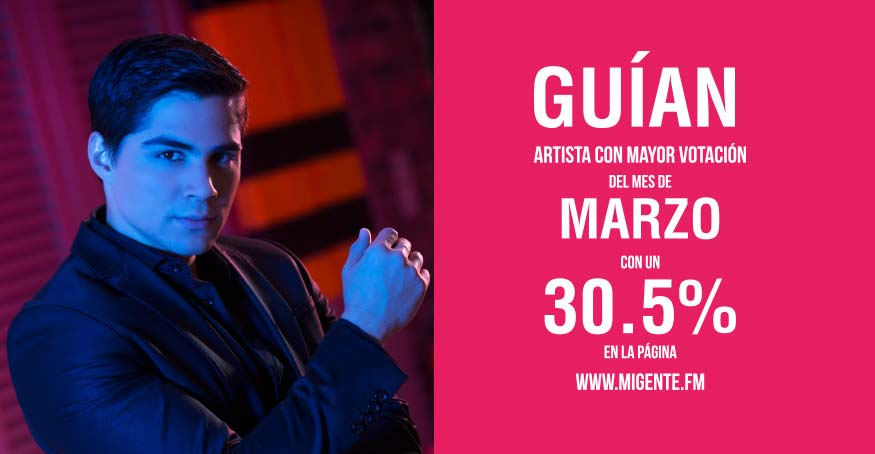

Directorio de Artistas

Alexis Escobar
{kind=link}
Anthony Zambrano
{kind=link}
Bryan Muñoz
{kind=link}
Charly & Willy, La Bandaparranda
{kind=link}
Danny Moreno
{kind=link}
Dr. Velásquez
 |
El cantautor Colombiano Dr Velásquez mejor conocido como #ElManDeGorraQueCantaPop sacó al mercado su último sencillo titulado “Será mía”. |
Edilson González
{kind=link}
Darío Gómez – Yo me llamo
{kind=link}
El Cóndor del Oriente
{kind=link}
El Charrito Negro
{kind=link}
Fanny Ospina
 |
Esta nueva artista en el género popular entró al mercado nacional con su tema promocional “Amores que duelen”, tema que se posicionó en el 2016, lo que la impulso a iniciar este 2017 con más fuerza que nunca y presenta “Tentación divina”, un nuevo éxito escrito con el alma que sin duda alguna será del agrado de todos los seguidores de la música popular. |
Fernando Gil
 |
El colombiano Fernando Gil está de lanzamiento con su más reciente sencillo “Perdí” que contó con la participación del cantante mexicano Roberto Junior. Sin duda el nuevo éxito de ambos artistas “Perdí” dará mucho de qué hablar y sentir en los corazones de América Latina. |
Grupo Tornado
{kind=link}
GSY
 |
El espectáculo musical de GSY combina lo mejor del sabor de la música latina con el género urbano internacional. El estilo fresco y juvenil de estos talentosos artistas se destaca ante el público por la potencia de la voz y sensualidad en tarima de Yennifer, la versatilidad y dominio con los instrumentos musicales de Sebastián y la trayectoria y estilo original en la voz de Giovanny. |
Guían
 |
“El pop urbano que nace desde el pulmón del mundo“. Guillermo Antonio Gil Ballesteros, más conocido como Guían, nació en la ciudad de Leticia hace 22 años. La música la lleva en la sangre gracias a que su padre Gustavo Gil, fue un exitoso baladista de los años 70´s. Guían regresa a Colombia con el lanzamiento de “Déjala” que hace parte de un moderno género creado por Guían dándole el nombre de Songui, una fusión entre música flamenca, brasilera y urbana.
|
Jaycob Duque
{kind=link}
Joaquín Guiller
 |
Joaquín Guiller, presenta de su autoría “Te lo perdiste” un trabajo musical que habla sobre ese amor que no fue valorado. El video está protagonizado por el ex futbolista Faustino “El tino” Asprilla y la modelo Luisa Raigoza. |
John Jairo Pérez
 |
John Jairo Pérez, llega a ritmo tropical con “El mala paga”, un tema lleno de humor y con la producción de Marlon Kapry. |
Joan Sebastián Burbano
 |
Hoy en día es uno de los artistas más prometedores de la música popular en Colombia ya con su sello y estilo propio de la mano de Studios Jhopers de Cali que en un pasado fue, ha sido y será inmortalizado en la voz de Joan Sebastián Burbano y quien se ve reflejado por la gran acogida del público en los diferentes escenarios del territorio nacional. |
Juan Carlos Ensamble
{kind=link}
Juan Manuel Nazmín
 |
Entre sus más recientes éxitos se encuentran “En la Jugada”, “Degenerado”, entre otros que se ubican muy bien en el gusto de la gente, logrando importante participación en los más recientes carnavales de blancos y negros al sur de nuestro país. Sigue en la búsqueda de un estilo muy original con respaldo de grandes músicos creando así, lo que es ahora Evolución nativa una mezcla muy auténtica entre lo popular y el rock, la cual tiene gran aceptación en la juventud y la gente conservadora. |
Karina Castillo
{kind=link}
Karval
 |
Cuando se habla de Cumbia Style, inmediatamente se reconoce al artista KARVAL como el creador de este género que sigue conquistando a su público. “Ya llegó” es el título de su nueva canción, un tema que habla de esas fiestas que se preparan cuando va llegar un familiar de nuevo a casa, y que en medio de una parranda se reúnen para festejar en cualquier época del año. |
Koke Castaño
 |
Un amor de verdad y los recuerdos que quedan después del rompimiento de una relación, fue la historia real que le sirvió de inspiración a Koke Castaño para componer su más reciente sencillo “Quiero saber”. Es que además del talento que tiene el artista urbano para la composición y para interpretar, la unión con Raudy cuando están dentro del estudio de grabación resulta una excelente combinación. |
Los Caballeros de la Cantina
 |
Los Caballeros de la Cantina, son el dueto más importante y novedoso del género popular con una puesta en escena tan impecable como su música razón por la que hoy presentan “Borracho de amor”, una canción de la autoría de Erika Vidrio cantautora mexicana, la cual habla del desamor con una mezcla de despecho y romanticismo. |
Los Hermanos Medina
{kind=link}
Luis Miguel Fuentes
 |
Con una trayectoria musical de más de 20 años, Luis Miguel Fuentes, presenta su más reciente sencillo “Te voy a olvidar”, un trabajo discográfico que se destaca por su romanticismo vallenato. Este artista tiene una excelente acogida por el público por su estilo romántico y parrandero. |
Luisito Muñoz
{kind=link}
Marco López
{kind=link}
Martín Saenz y su grupo Yerbabuena
 |
Martín Sáenz, cuenta con un show variado de 12 artistas en escena, efectos especiales, 2 hermosas bailarinas y mucho más, revolucionando las presentaciones y la música parrandera en Colombia. Separe ya su fecha y tenga el mejor show parrandero en sus eventos. |
Mauricio Ceballos
{kind=link}
Olider Montana
 |
“Sin fortuna”, es el más reciente trabajo discográfico de Olider Montana. El video que fue grabado en San Luís, Tolima, y ya tiene más de 12 mil visualizaciones en el canal de YouTube. |
Orlando López
{kind=link}
PYEM
 |
Pyem, se encuentra promocionando su más reciente sencillo “Sinónimo de maldad” junto con Dani y Magneto, canción que está ocupando los primeros lugares en las principales estaciones radiales del país. |
Oco Yaje
 |
Oco Yaje, es el nombre de la agrupación urbana del genero dance hall, hiphop, conformada por dos Oco Yaje viene con una nueva propuesta urbana llamada “El remate” basada en golpes y bajos combinados con música colombiana. Oco Yaje continúa presentando su más reciente trabajo “Borrachera”, que cuenta con casi 80 mil visualizaciones en YouTube. |
Roy Prada
{kind=link}
Sebastián Campos
 |
El cantante, compositor y guitarrista Sebastián Campos quien se perfila como una de las grandes |
Stokoff
 |
Después de lograr los primeros lugares en los listados radiales en Colombia y la Costa Este de los Estados Unidos, con su sencillo “Seguiré adelante”, el artista regresa para promocionar su más reciente sencillo y video musical titulado “Pensando en ti”, tema de su completa autoría, en donde habla de una historia de amor que se termina y uno de los protagonistas no logra olvidar a la otra persona por más que lo intenta. Contacto: |
Yiyo Bohórquez
 |
Oriundo de Santa Sofía – Boyacá. Cantante, compositor e intérprete del acordeón; desde muy niño su inclinación por el vallenato ha llegado a miles de seguidores con canciones como “Entrégame tu amor”, ahora presenta su nuevo éxito “Insistir en tu amor”. |